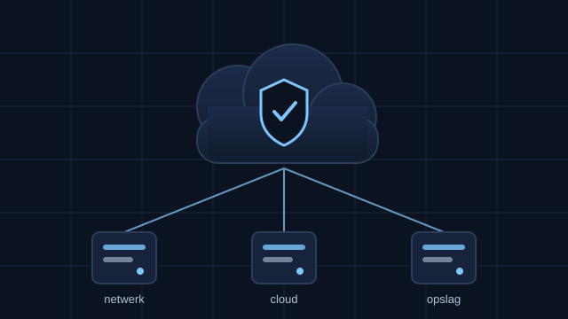

Persoonlijke profielpagina · Project 1
Harsha Vardhan Kanaparthi
HBO-ICT student aan de Hogeschool Utrecht. Ik wil de kant op van cyber security en cloud.
Amstelveen, Noord-Holland
Over mij
Hoi, ik ben Harsha. Ik zit in het eerste jaar van HBO-ICT aan de Hogeschool Utrecht. Hiervoor deed ik de mbo-4 opleiding Software Development bij ROC van Amsterdam. Daar merkte ik dat ik het leukst word van de vraag: hoe zit een systeem eigenlijk in elkaar, en hoe zorg je dat het veilig blijft?
Daarom wil me bij Open-ICT gaan richten op cyber security en cloud. Ik vind het interessant hoe een netwerk, een server en een cloudplatform samenwerken, en wat er misgaat als een van die onderdelen niet goed is ingesteld. Ik leer dat het liefst door het zelf te bouwen en het daarna stuk te maken en te repareren.
Deze pagina is mijn eerste opdracht van de opleiding. Ik heb hem gemaakt met alleen HTML, CSS en een klein beetje JavaScript. Geen Bootstrap, geen kant-en-klaar template. Alles wat je hier ziet, kan ik zelf uitleggen.
- Nu Jaar 1 HBO-ICT, Hogeschool Utrecht
- Hiervoor Mbo-4 Software Development, ROC van Amsterdam
- Talen Nederlands, Engels, Hindi, Telugu
Waar ik nieuwsgierig naar ben
Vier onderwerpen waar ik in mijn eigen tijd mee bezig ben. Bij elk onderwerp staat wat ik er concreet mee doe, niet alleen het woord.
-
Cyber security
Hoe bescherm je een organisatie tegen aanvallen? Ik lees over netwerkbeveiliging en volg de Microsoft Security Essentials cursus om de basisbegrippen te leren.
-
Cloud: Azure en AWS
Ik wil snappen wat er gebeurt als je een applicatie niet meer op een eigen server draait maar in de cloud. Ik heb de Azure AI Essentials cursus afgerond.
-
Netwerken en Linux
Switches, routers en de command line. Ik heb certificaten gehaald bij Arista Networks en Canonical (Ubuntu) om hier beter in te worden.
-
Dingen uitproberen
Ik maak liever iets kleins dat werkt dan iets groots dat half af is. Deze website is daar een voorbeeld van: eerst de basis, daarna pas extra's.

Wat ik al een beetje kan
Ik zet dit er eerlijk bij: van sommige dingen ken ik de basis, andere heb ik tijdens mijn stages echt gebruikt. Ik claim geen expert te zijn.
Bouwen
- HTML en CSS (deze pagina)
- JavaScript, basis
- Python
- Werken met Git
Beheer en infra
- Linux, vooral Ubuntu
- Windows Server, basis
- Netwerken: Cisco en Arista
- REST API's aanroepen
Cloud en AI
- Microsoft Azure, basis
- Amazon Web Services, basis
- Azure AI Services
- Generatieve AI toepassen in een workflow
Opleiding en ervaring
-
2026 - heden
HBO-ICT, Hogeschool Utrecht
Bachelor Information and Communication Technology. Ik wil me gaan richten op Cyber Security & Cloud.
-
sep 2025 - jan 2026
Stage software development, ROC van Amsterdam
Website gebouwd voor de Culturele INTROWEEK MBO 2026, waarmee studenten gekoppeld worden aan culturele instellingen in Amsterdam. Ik werkte aan de inschrijfformulieren, de koppeling van student aan instelling en het testen.
-
sep 2024 - feb 2025
Stage software development, Kompas Publishing
Gewerkt aan applicaties in Python en JavaScript, aan het sneller maken van bestaande code en aan het inbouwen van AI in het contentproces. Ook code reviews en documentatie.
-
2023 - 2026
Mbo-4 Software Development, ROC van Amsterdam
Hier heb ik leren programmeren en voor het eerst in een team gewerkt.
-
2019 - 2023
VMBO-KB, Yuverta
Groene richting. Daarna overgestapt naar techniek.
Certificaten die ik heb gehaald
- Microsoft Azure AI Essentials
- Microsoft Security Essentials
- Network Automation Professional (Arista)
- Ubuntu Linux Professional (Canonical)
- Accounting Foundations (Xero)
Over deze pagina
Deze pagina is opdracht 1 van semester 1. Hieronder staat wat ik heb gedaan en waarom ik bepaalde keuzes heb gemaakt.
Zo is hij opgebouwd
index.html
css/
style.css
js/
script.js
img/
profiel-harsha.svg
cloud-security.svg
favicon.svgDe HTML bepaalt de inhoud en de volgorde, de CSS bepaalt hoe het eruitziet, en de JavaScript regelt alleen het menu, de leesmodus en het jaar in de footer.
Keuzes die ik heb gemaakt
- Geen Bootstrap. Amer zei in zijn feedback: blijf bij de basis. Ik heb het framework eruit gehaald en de layout zelf gemaakt met CSS Grid en Flexbox.
- Werkt bij inzoomen. Selim liet zien dat de pagina brak bij inzoomen. Ik gebruik nu overal relatieve maten en breekpunten, en ik heb getest tot 400% zoom.
- Geen externe bestanden. Alle letters komen uit het systeemlettertype van je eigen computer. Er wordt niets bij Google of een ander bedrijf opgehaald.
- Geen telefoonnummer of adres. Alleen een mailadres en LinkedIn. Deze pagina is openbaar, mijn huisadres hoeft daar niet op.
Contact
Vragen over deze pagina, of gewoon even kennismaken? Stuur me een mail of vind me op LinkedIn.
- E-mail harsha.kanaparthi20062@gmail.com
- LinkedIn linkedin.com/in/harsha-vardhan-kanaparthi
- Meer links bio.site/harsha_knp
Ik verzamel geen gegevens op deze pagina. Er staan geen cookies, geen trackers en geen contactformulier dat iets opslaat.